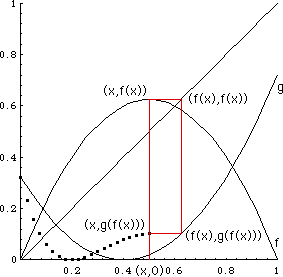
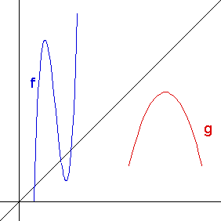

Purpose To use the method of graphical iteration, familiar from the study of chaos, to determine the domain of the composition of two functios
Materials Exercise sheet, ruler, and pencil
Procedure, most clearly seen through an example.
Exercises 1. Now find the domain of the composition g(f) for the functions pictured here.
|  |
| Answer |
2. Modify this method to find the range of a composition. Here is the Answer.